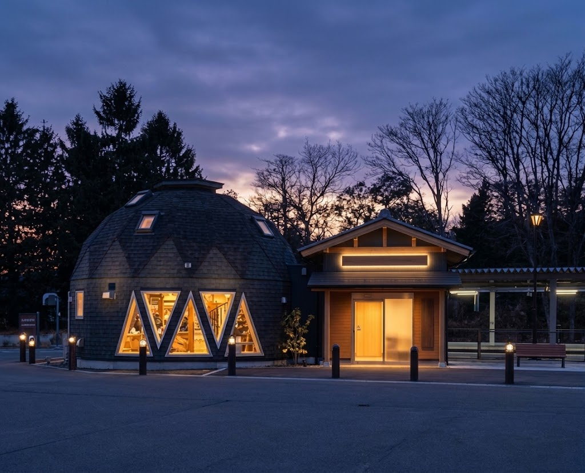
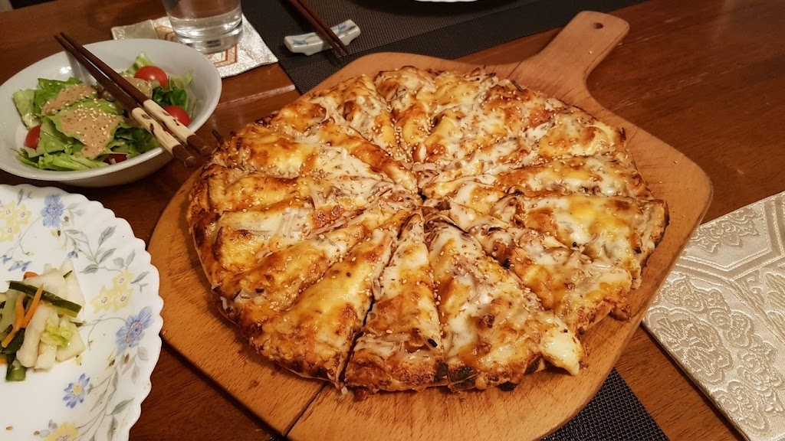
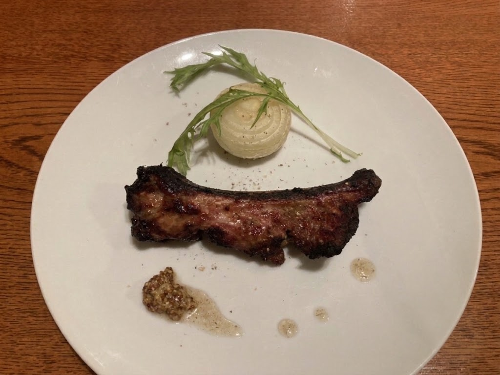
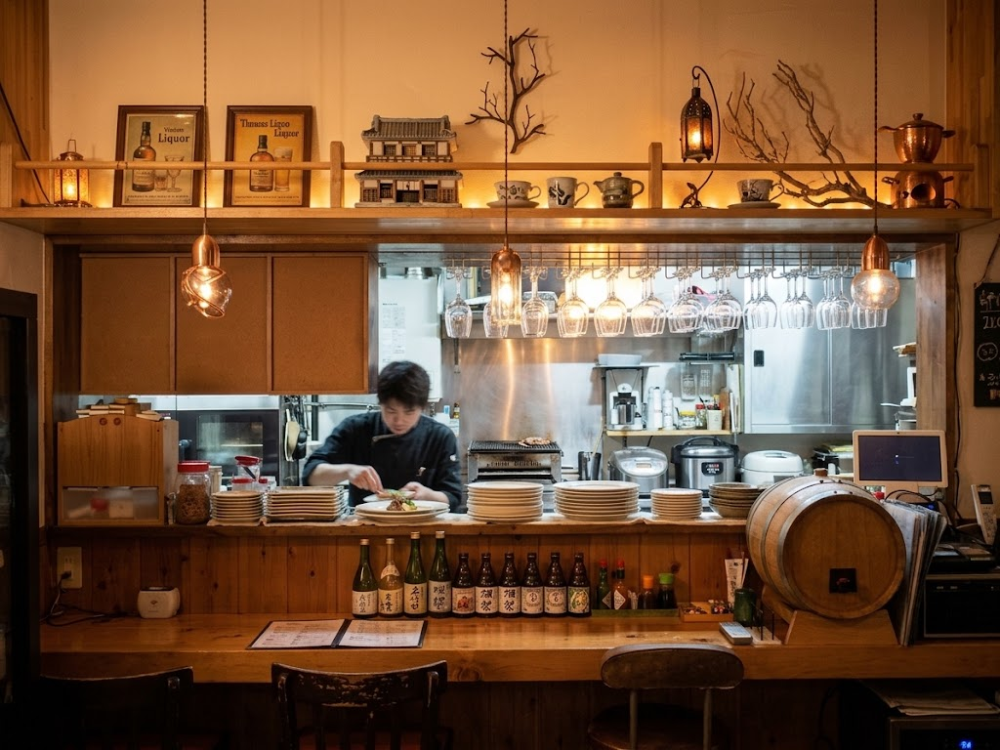

オーナーのこと
オーナーの圓子理江子さんは、お店を営みながら、蔵に眠っていた着物や帯のリメイクを家族と楽しんでいます。
手間を惜しまない料理も、家族と楽しむ暮らしの延長にある、あたたかな気持ちから生まれています。
ボン ラポール
岩手町・川口駅からすぐ。静かな住宅街の奥にある、一軒家の隠れ家レストラン。地元の食材と自家製熟成味噌を使った、ここでしか出会えない一枚をどうぞ。
静かな住宅街の奥にたたずむ、ボン ラポール。落ち着いた空間で、ゆっくりと食事の時間を過ごせます。
フレンチとイタリアンの技を土台に、地場産の野菜をはじめとした地元の食材を生かし、丁寧で優しい味付けの料理をお出ししています。


自家製熟成味噌を使った、ここならではのピザ。生地にしっかり厚みがあり、食べごたえも十分です。ワインとの相性も良く、会話もはずみます。
地元の食材を生かしたコース料理は、一品一品が手づくり。丁寧で優しい味わいが、お客様からも好評です。
コースの締めには、心まで満たしてくれるピザをどうぞ。コースの内容や料金については、お電話でお問い合わせください。

静かな住宅街の奥にある、特別感のある空間。看板も少なく、知る人ぞ知るお店です。
地元食材を生かした、丁寧で優しい味付け。自家製熟成味噌を使ったピザも自慢です。
カウンター席もあり、ゆっくり食事ができます。貸切もできますので、ご相談ください。予約優先です。
★★★★★
ピザは生地厚でボリューム超絶ですよ。地場産の野菜など選ばれてて新鮮で美味しいと思います。お気に入りレストランの一つです。また主人と来たいです。
クチコミより
★★★★
貸切で、宴会もできます。ワインと自家製ピザがオススメです。川口駅からすぐです。隠れ家的なお店です。
クチコミより
ご夫婦やご家族での食事、友人との語らい、少人数での宴会に。カウンター席もあり、おひとりでも過ごしやすい空間です。
貸切のご相談も受け付けています。お気軽にお電話ください。

オーナーの圓子理江子さんは、お店を営みながら、蔵に眠っていた着物や帯のリメイクを家族と楽しんでいます。
手間を惜しまない料理も、家族と楽しむ暮らしの延長にある、あたたかな気持ちから生まれています。
自慢のピザに合わせて、ワインを選んで楽しめるセットを、準備しています。ワインとの相性が好評のピザを、もっと自由に楽しんでいただくためのメニューです。
内容・提供開始時期が決まりましたら、こちらでお知らせします。